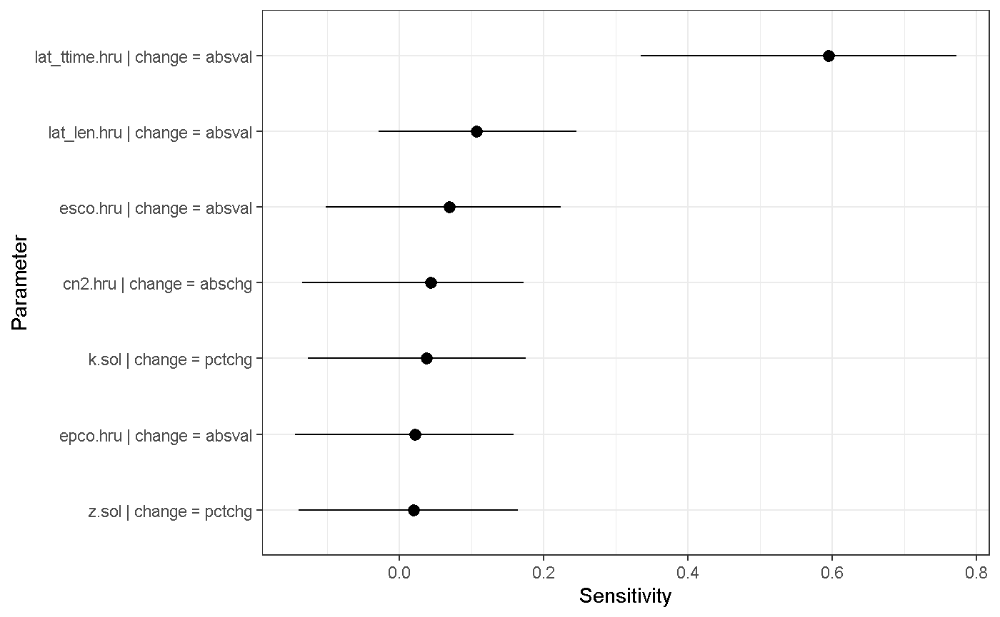

R packages
Several R packages provide methods for sensitivity analysis. Two of the widely implemented packages are sensitivity (Iooss et al., 2018) and fast (Reusser, 2015). fast provides the Fourier Amplitude Sensitivity Test (FAST) as single method for sensitivity analysis. The implementation of FAST, however, is very well suited to implement it in a workflow with SWATplusR. sensitivity is a very comprehensive collection of methods for sensitivity analysis (it actually includes the FAST method as well). The implementation in a workflow with SWATplusR is, however, less flexible. In this example we will use two frequently applied methods for sensitivity analysis that are provided by these two R packages, the method of Solbol (1993) provided by sensitivity and FAST (Cukier et al., 1973) provided by fast. Most methods for sensitivity analysis require a scalar model result to assess the sensitivity of that output variable to changes in the inputs. Multiple goodness-of-fit functions are available from literature to evaluate simulated time series with observed time series of that variable that result in scalar values. The hydroGOF package (Mauricio Zambrano-Bigiarini, 2017) summarizes frequently used functions for the evaluation of time series of hydrological variables.
Package installation
If you do not have installed any of the required R package, follow the instructions for the respective R package. All of the required R packages are available from CRAN and can be installed with the following commands:
install.packages("dplyr")
install.packages("fast")
install.packages("forcats")
install.packages("ggplot2")
install.packages("hydroGOF")
install.packages("sensitivity")
install.packages("tidyr")
install.packages("purrr")Loading demo data
The sensitivity analysis example uses the SWAT+ demo project available from SWATplusR. The demo project is a simple model setup of a head watershed of the Little River Experimental Watershed (LREW; Bosch et al., 2007). You can load the to your hard drive as follows:
# The path where the SWAT demo project will be written
demo_path <- "Define:/your/path"
# Loading the SWAT+ demo project on your hard drive
path_plus <- load_demo(dataset = "project",
version = "plus",
path = demo_path,
revision = 57)SWATplusR also provides observation data of daily discharge records at the main outlet of the demo for the time period 1968-01-01 until 2012-12-31. We will use the observation data to evaluate the model in each optimization step. The model will be evaluated for the time period 2003-01-01 to 2007-12-31. Therefore, we load the demo data and limit it to this time period:
Model parameters
In the sensitivity analyses we will use 7 parameters that are frequently used for model calibration with respect to simulated discharge. In a first step we define the parameter names as these control the parameter alteration in the run_swat*() functions. If you want to learn in detai how to define the parameter names correctly see the Get started section on ‘Model parameter alteration’:
par_names <- c("cn2.hru | change = abschg",
"lat_ttime.hru | change = absval",
"lat_len.hru | change = absval",
"k.sol | change = pctchg",
"z.sol | change = pctchg",
"esco.hru | change = absval",
"epco.hru | change = absval")
Sensitivity analysis with fast
Parameter sampling
The Fourier Amplitude Sensitivity Test (FAST) is a method to perform GSA with few model evaluations. It only requires a few simulations when the number of parameters is low and strongly increases to tenth of thousands of model evaluations for more than 20 parameters. To keep the number of model evaluations low we use the 7 selected parameters above.
The FAST method requires a specific parameter sampling design, that is available in fast with the function fast_parameters().
par_fast <- fast_parameters(
minimum = c(-15, 0.5, 10, -50, -50, 0, 0),
maximum = c( 10, 50, 100, 50, 50, 1, 1),
names = par_names) %>%
as_tibble()
par_fast
#> # A tibble: 167 x 7
#> `cn2.hru | chan… `lat_ttime.hru … `lat_len.hru | … `k.sol | change…
#> <dbl> <dbl> <dbl> <dbl>
#> 1 -13.8 44.3 84.3 -29.5
#> 2 -11.2 32.7 52.3 12.0
#> 3 -8.67 21.1 20.3 47.0
#> 4 -6.11 9.45 31.1 5.42
#> 5 -3.55 2.89 63.1 -36.1
#> 6 -0.994 14.5 95.1 -22.9
#> 7 1.57 26.1 73.4 18.7
#> 8 4.13 37.8 41.4 40.4
#> 9 6.69 49.4 10 -1.20
#> 10 9.25 39.3 42.0 -42.8
#> # … with 157 more rows, and 3 more variables: `z.sol | change =
#> # pctchg` <dbl>, `esco.hru | change = absval` <dbl>, `epco.hru | change
#> # = absval` <dbl>Model simulation and evaluation
To perform a FAST analysis for 7 parameters 167 model evaluations are required. We implement the sampled FAST parameter combinations in the SWAT+ demo project by passing the parameter table with the argument parameter in the run_swaplus() function. We will perform the sensitivity analysis for the simulation period 2003-01-01 to 2007-12-31 (to accord with the simulation workflow of the tutorial on Parameter sampling an model calibration, as sensitivity analysis is often followed by the model calibration).
q_fast <- run_swatplus(project_path = path_plus,
output = list(q_sim = define_output(file = "channel",
variable = "flo_out",
unit = 3)),
parameter = par_fast,
start_date = "2000-01-01",
end_date = "2007-12-31",
years_skip = 3,
n_thread = 4)
#> Building 4 threads in 'C:/swatplus_demo/.model_run':
#> Completed 4 threads in 0S
#> Performing 167 simulations on 4 cores:
#> Completed 167 simulations in 1M 18SThe model runs that used the parameter sets sampled with fast are evaluated using the NSE (Nash and Sutcliffe, 1970) criterion for daily discharge for the time period 2003 to 2012.
The NSE() function is available from the hydroGOF package. The simulations are evaluated with the daily observations of discharge for the period 2003 to 2007. The calculated NSE values can than be used to assess the sensitivity of the NSE to changes in parameter values with the function sensitivity() from the fast package:
nse_fast <- q_fast$simulation$q_sim %>%
select(-date) %>%
map_dbl(., ~NSE(.x/8.64, q_obs$discharge))
sens_fast <- sensitivity(nse_fast, 7)Visualization of the FAST sensitivities
To visualize the calculated sensitivities we first arrange the results in a tibble (Müller and Wickham, 2019). It is a good idea to rank the parameters in the plot of their sensitivities. Therefore, we convert the parameter names to factors and sort them according to their sensitivity results using the functionality of the forcats package (Wickham, 2019). We plot the parameter ranking in a barplot using ggplot2 (Wickham, 2016).
result_fast <- tibble(parameter = q_fast$parameter$definition$par_name,
fast = sens_fast) %>%
mutate(parameter = factor(parameter) %>% fct_reorder(., fast))ggplot(data = result_fast) +
geom_col(aes(x = parameter, y = fast)) +
xlab("Parameter") +
ylab("Sensitivity") +
coord_flip() +
theme_bw()
Sensitivity analysis with the method of Sobol
The method of Sobol is a reference method for GSA. To implement the SWAT model in the GSA workflow with sensitivity a function has to be defined that returns the a scalar variable for which the sensitivity is assessed.
swat_sobol <- function(par, obs) {
q_sim <- run_swatplus(project_path = proj_path,
output =list(q_sim = define_output(file = "channel",
variable = "flo_out",
unit = 1)),
parameter = par,
start_date = "2000-01-01",
end_date = "2007-12-31",
years_skip = 3, n_thread = 4,
add_date = FALSE)
nse_q <- map_dbl(q_sim$simulation$q_sim/8.64, ~ NSE(.x, obs))
return(nse_q)
}To perform GSA with the method of Sobol two random sets of samples with the same sample size for the parameters that should be analyzed are required.
par_bound <- tibble("cn2.hru | change = abschg" = c(-15, 10),
"lat_ttime.hru | change = absval" = c(0.5, 50),
"lat_len.hru | change = absval" = c(10, 100),
"k.sol | change = pctchg" = c(-50, 50),
"z.sol | change = pctchg" = c(-50, 50),
"esco.hru | change = absval" = c(0, 1),
"epco.hru | change = absval" = c(0, 1))
n_par <- 7
n_samp <- 500
x1 <- data.frame(matrix(runif(n_par * n_samp), nrow = n_samp)) %>%
set_names(., names(par_bound)) %>%
map2_dfc(., par_bound, ~ (.x * (.y[2] - .y[1]) + .y[1]))
x2 <- data.frame(matrix(runif(n_par * n_samp), nrow = n_samp)) %>%
set_names(., names(par_bound)) %>%
map2_dfc(., par_bound, ~ (.x * (.y[2] - .y[1]) + .y[1]))To perform the sensitivity analysis with using method of Sobol the following command has to be executed. In total 4000 model evaluations are necessary to analyze 7 parameters with 500 Sobol samples.
sens_sobol <- sobol(model = swat_nse, X1 = x1, X2 = x2,
obs = q_obs$discharge, nboot = 100)Visualization of the Sobol analysis
Similar to the visualization of the results with the FAST method the results of the GSA with the method of Solbol are plotted.
plot_sobol <- sens_sobol$S %>%
mutate(parameter = rownames(.)) %>%
mutate(parameter = factor(parameter) %>% fct_reorder(., original))
ggplot(data = plot_sobol) +
geom_pointrange(aes(x = parameter, y = original ,
ymin = `min. c.i.`, ymax = `max. c.i.`)) +
coord_flip() +
xlab("Parameter") +
ylab("Sensitivity") +
theme_bw()
References
Bosch, D. D., Sheridan, J. M., Lowrance, R. R., Hubbard, R. K., Strickland, T. C., Feyereisen, G. W. and Sullivan, D. G.: Little river experimental watershed database, Water Resources Research, 43(9), doi:10.1029/2006wr005844, 2007.
Cukier, R. I., Fortuin, C. M., Shuler, K. E., Petschek, A. G. and Schaibly, J. H.: Study of the sensitivity of coupled reaction systems to uncertainties in rate coefficients. i theory, The Journal of Chemical Physics, 59(8), 3873–3878, doi:10.1063/1.1680571, 1973.
Iooss, B., Janon, A., Pujol, G., Khalid Boumhaout, Veiga, S. D., Delage, T., Fruth, J., Gilquin, L., Guillaume, J., Le Gratiet, L., Lemaitre, P., Nelson, B. L., Monari, F., Oomen, R., Rakovec, O., Ramos, B., Roustant, O., Song, E., Staum, J., Sueur, R., Touati, T. and Weber, F.: Sensitivity: Global sensitivity analysis of model outputs. [online] Available from: https://CRAN.R-project.org/package=sensitivity (Accessed 5 March 2019), 2018.
Mauricio Zambrano-Bigiarini: HydroGOF: Goodness-of-fit functions for comparison of simulated and observed hydrological time series., 2017.
Müller, K. and Wickham, H.: Tibble: Simple data frames. [online] Available from: https://CRAN.R-project.org/package=tibble (Accessed 5 March 2019), 2019.
Nash, J. E. and Sutcliffe, J. V.: River flow forecasting through conceptual models part I - A discussion of principles, Journal of Hydrology, 10(3), 282–290, doi:10.1016/0022-1694(70)90255-6, 1970.
Reusser, D.: Fast: Implementation of the fourier amplitude sensitivity test (fast). [online] Available from: https://CRAN.R-project.org/package=fast (Accessed 5 March 2019), 2015.
Sobol, I. M.: Sensitivity analysis for nonlinear mathematical models, Mathematical Modelling and Computational Experiments, 4(1), 407–414, doi:10.18287/0134-2452-2015-39-4-459-461., 1993.
Wickham, H.: ggplot2: Elegant Graphics for Data Analysis, Springer-Verlag New York. [online] Available from: http://ggplot2.org, 2016.
Wickham, H.: Forcats: Tools for working with categorical variables (factors). [online] Available from: https://CRAN.R-project.org/package=forcats (Accessed 5 March 2019), 2019.